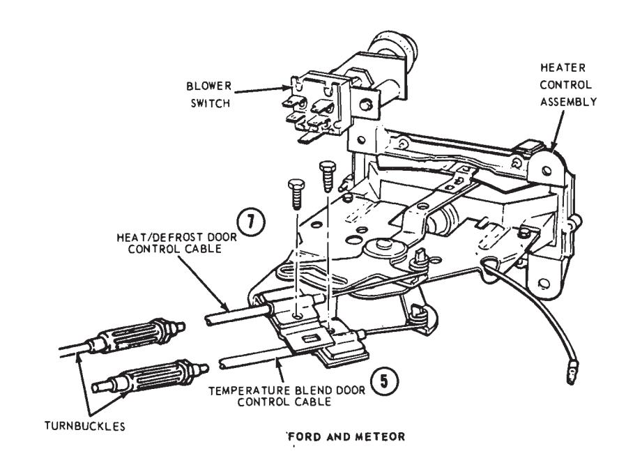
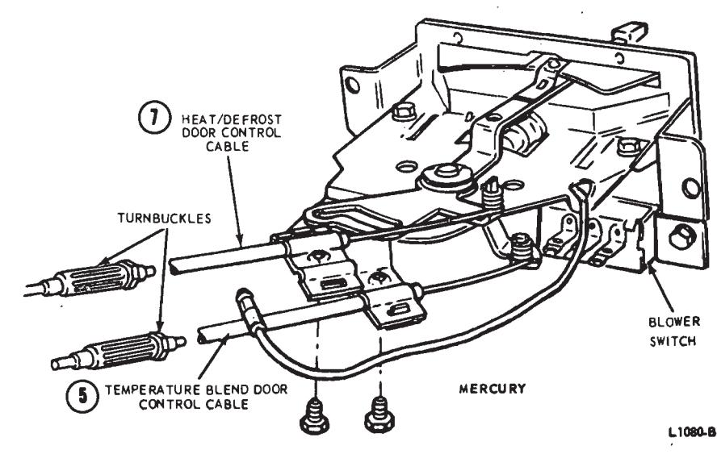
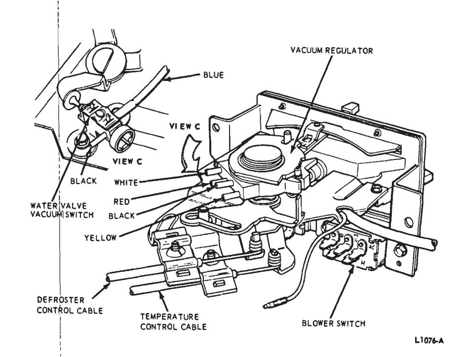
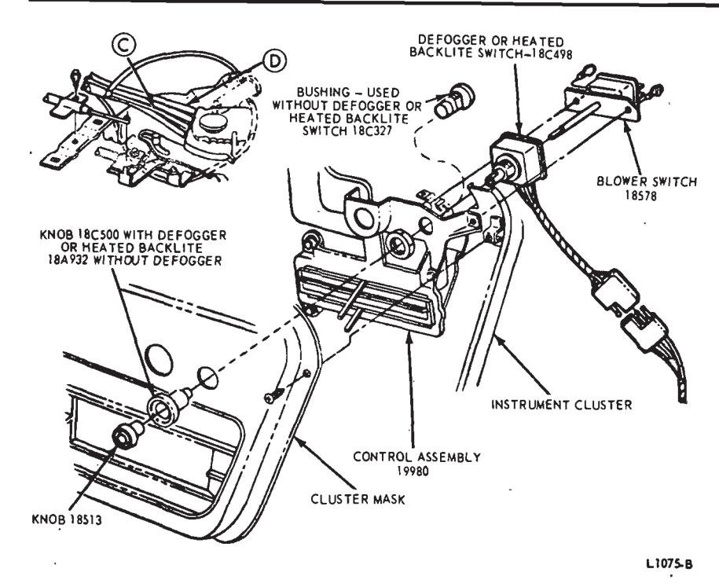
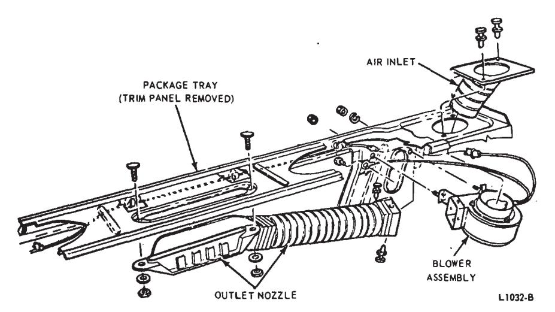
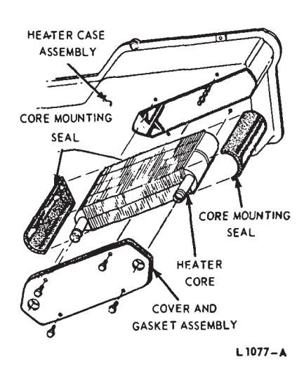
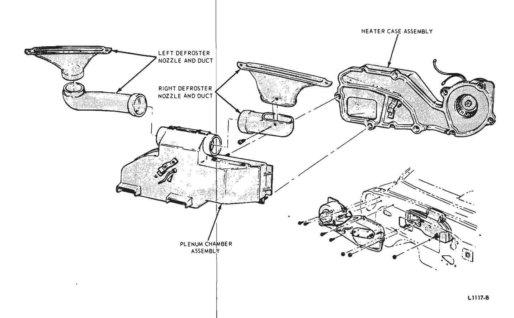

Heating Systems · 34-03-31
Control Assembly—Ford and Meteor
Removal
- Disconnect the battery ground cable.
- Remove the instrument panel pad (Group 47).
- Remove the instrument cluster mask (Group 33).
- Disconnect the wire plug connector from the blower switch.
- Disconnect the defogger or heated backlite switch wires at the multiple connector if equipped with a defogger.
- Disconnect the Bowden cables from the control assembly (Fig. 29).
- Disconnect the illumination light wire at the connector.
- Remove three control assembly attaching screws, and pull the control assembly out from the front of the instrument panel.
Installation
-
Position the control assembly to the instrument panel and install the three attaching screws.
-
Connect the illumination light wire, blower and defogger or heated backlite switch wires.
-
Connect the Bowden cables to the control assembly.
-
Install the instrument cluster mask (Group 33).
-
Install the instrument panel pad (Group 47), and connect the battery cable.

Fig. 29 — Heater Controls—Rear View—Ford, Mercury and Meteor
Control Assembly—Mercury
Removal
- Disconnect the battery ground cable.
- Pull the blower knob and the defogger or heated backlite knob off the switches.
- Remove the left air vent knob and the brake release knob. Remove the cable retaining nuts and lower both cables.
- Remove two screws attaching the control assembly to the instrument panel and pull the control away from the instrument panel.
- Disconnect the wire plug connectors from the blower switch and the defogger switch. Disconnect the illumination light wire.
- Disconnect the Bowden cables from the control assembly (Fig. 29) and remove the control assembly.
Installation
- Connect the Bowden cables, illumination light wire and the plug connectors to the control assembly.
- Position the control assembly to the instrument panel and install the two attaching screws.
- Install the blower and defogger or heated backlite switch knobs.
- Install the left air vent and brake release cables and knobs.
- Connect the battery ground cable.
Heater Temperature Control Cable— Ford and Meteor
Removal
- Remove the instrument panel pad (Group 47).
- Disconnect the cable from the control assembly.
- Remove the glove compartment door.
- Remove the glove compartment liner attaching screws and pull the liner forward.
- Disconnect the cable from the heater temperature blend door arm and the dash panel and remove the Bowden cable.
Installation
-
Position the Bowden cable in the vehicle, and connect the cable to the dash panel and the temperature blend door. 2. Connect the cable to the control assembly. Adjust the cable for a good seal between the blend door and the heater housing when the control is set at the HEAT position.

Fig. 30 — Control Assembly—Mercury -
Place the glove compartment liner into position and install the attaching screws.
-
Install the glove compartment door.
-
Install the instrument panel pad (Group 47).
Temperature Control Cable—Mercury
- Disconnect the control cable at the control assembly.
- Remove the glove compartment liner.
- Disconnect the control cable at the temperature air door, and remove the cable.
- Position the control cable under the instrument panel and connect the cable at the temperature air door.
- Connect the cable to the control assembly, and adjust the cable at the turnbuckle.
- Install the glove compartment liner.
Heat-Defroster Control Cable—Ford and Meteor
- Remove the instrument panel pad (Group 47).
- Disconnect the cable from the control assembly.
- Disconnect the cable from the heater housing and the heat-defroster door arm, and remove the cable.
- Connect the cable to the heater housing and the heat-defrost door arm.
- Connect the cable to the control assembly and, adjust the cable at the turnbuckle for full travel of the heat-defrost door.
- Install the instrument panel pad (Group 47).
Heat-Defrost Control Cable—Mercury
- Remove the screw and clip retaining the cable to the control assembly.
- Disconnect the cable at the heat-defrost air door, and remove the control cable.
- Position the cable to the control assembly, and install the clip and retaining screw (Figs. 29 and 30).
- Connect the cable at the heat-defrost air door.
- Adjust the control cable at the turnbuckle (Section 3).
Blower Switch—Heater or Heater-A/C—Ford and Meteor
Removal
-
Remove the instrument panel pad (Group 47).

Fig. 31 — Control Assembly—Ford and Meteor
Fig. 32 — Remote Defagger Disassembled -
Remove the blower switch knobs.
-
Disconnect the wire plug connector from the blower switch.
-
Remove two switch attaching screws and remove the blower switch (Fig. 31).
Installation
- Position the blower switch to the control assembly, and install the two attaching screws.
- Connect the wire plug connector to the blower switch.
- Install the blower switch knobs.
- Install the instrument panel pad (Group 47).
Defogger or Heated Backlite Switch—Ford and Meteor
Removal
-
Remove the instrument panel pad (Group 47).
-
Remove the instrument cluster mask (Group 33).
-
Disconnect the wire connector from the heater or heater-A/C blower switch.
-
Remove two screws attaching the heater or heater-A/C blower switch to the heater or heater-A/C control assembly, and remove the switch (Fig. 31).

Fig. 33 — Heater Core—Ford, Mercury and Meteor -
Remove the nut retaining the defogger or heated backlite switch to the heater or heater-A/C control assembly (Fig. 31). Disconnect the wire connector and remove the switch.
Installation
- Position the defogger or heated backlite switch to the control assembly and install the retaining nut. Connect the wire connector.
- Slide the blower switch shaft through the defogger or heated backlite switch and install the two attaching screws.
- Connect the wire plug to the blower switch.
- Install the instrument cluster mask (Group 33).
- Install the instrument panel pad (Group 18).
Blower Switch—Heater, Heater-A/C or Defogger—Mercury
Removal
- Disconnect the battery ground cable.
- Pull the knob from the blower switch.
- Disconnect the wire plug connector from the blower switch.
- Remove two screws attaching the switch to the control assembly (Fig. 32) and remove the switch.
Installation
-
Position the switch to the control assembly and install the two attaching screws.
-
Connect the wire plug connector to the blower switch.

Fig. 34 — Defroster Nozzle and Plenum Chamber Installation—Ford, Mercury and Meteor -
Install the knob on the blower switch.
-
Connect the battery ground cable.
Blower Resistor—Ford Mercury and Meteor
- Open the hood and disconnect the multiple plug connector from the resi(tor.
- Remove two resistor attaching plastic rivets and remove the resistor from the heater housing.
- Position the resistor to the heater housing and install the two attaching plastic rivets.
- Connect the plug connector to the resistor.
Defogger Motor—Ford, Mercury and Meteor
- From inside the luggage compartment, remove the defogger motor mounting nuts, and disconnect the motor wire.
- From inside the passenger compartment, pry up the grille assembly and remove the grille. (On Mercury models with a drop backlite, remove the package tray trim panel).
- Lift the defogger from the package tray, remove the ground wire retaining screw, and remove the defogger assembly.
- Remove the clips and separate the motor and wheel from the housing.
- Transfer the blower wheel to the new motor, and install the motor and wheel in the housing.
- Position the defogger to the package tray, install the ground lead, and route the power lead through the hole in the tray.
- Position the defogger in the tray, and install the grille (package tray on Mercury with a drop backlite).
- Install the defogger mounting nuts from inside the luggage compartment, and connect the power lead.
- Check the operation of the defogger.
Remote Defogger Blower Motor
Remove the rear seats. In the trunk, disconnect the inlet and outlet hoses from the blower (Fig. 32). Then, disconnect the blower wires and retaining nuts and remove the motor.
Remote Defogger Outlet Nozzle
Disconnect the nozzle hose at the blower housing. Then, remove 2 nuts and washers attaching the nozzle to the package tray and remove the nozzle (Fig. 32).
Remote Defogger Air Inlet
Remove the rear seats and the package tray trim panel. Then, remove the 2 air inlet retainers and lift the inlet from the package tray (Fig. 32)
Heater Core—Ford, Mercury and Meteor
Drain the cooling system and disconnect the heater hoses from the heater core. Then, remove the core cover and gasket, and remove the heater core (Fig. 33).
Blower and Motor—Ford, Mercury and Meteor
Removal
- Scribe location marks on the right hood, hinge and mounting panel and remove the hood and right hood hinge.
- Disconnect the right fender from the fender apron, cowl side panel, front end sheet metal and remove the fender
- Disconnect the blower motor lead and ground wires.
- Remove the blower motor mounting plate screws and remove the motor and wheel assembly.
Installation
- Apply body sealer between motor mounting plate and the housing before installing the assembly.
- Position the blower motor and wheel assembly in the housing opening and install the four mounting screws.
- Connect the blower motor lead and ground wires.
- Position the right fender and connect the front sheet metal, cowl side panel and fender apron.
- Install the right hood hinge and the hood using the scribed lines for locating.
Defroster Nozzles—Ford, Mercury and Meteor
Remove the instrument panel pad (Group 47). Loosen the instrument panel brace if the left nozzle is to be removed. Then, remove the nozzle attaching screws and lift the nozzle out of the defroster duct (Fig. 34).